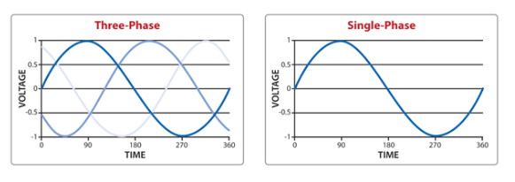
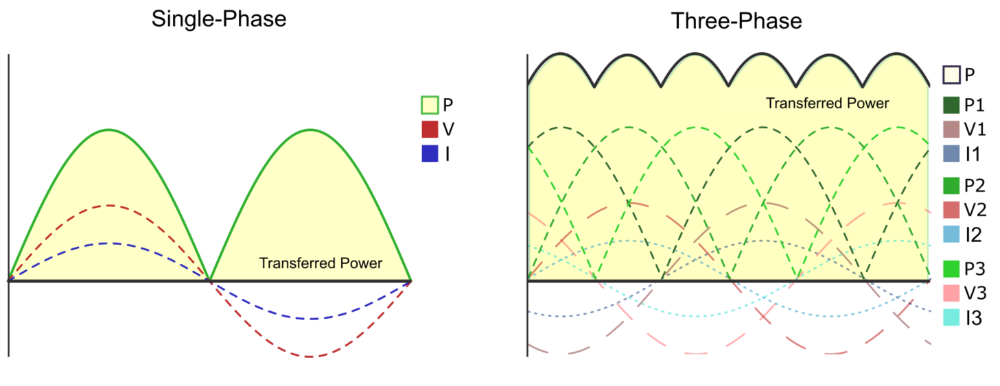
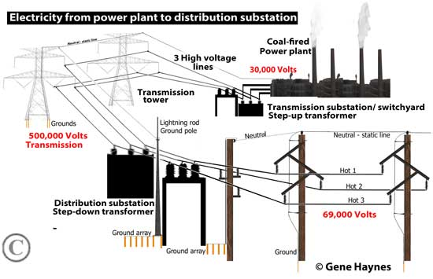
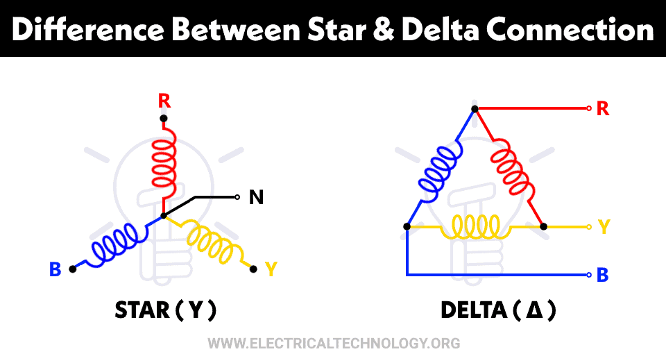
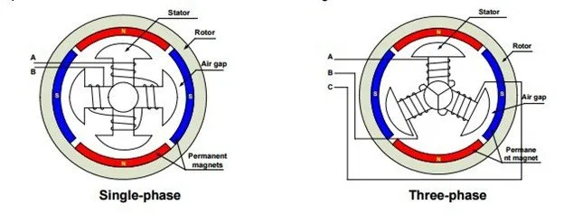
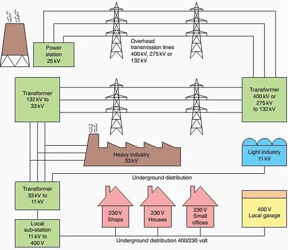
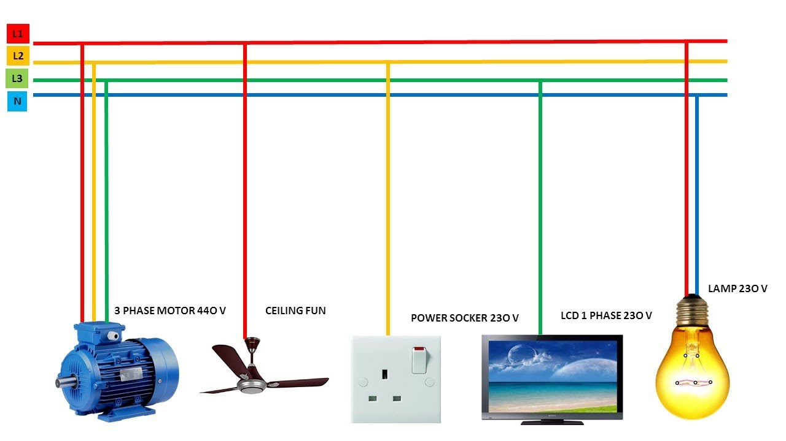
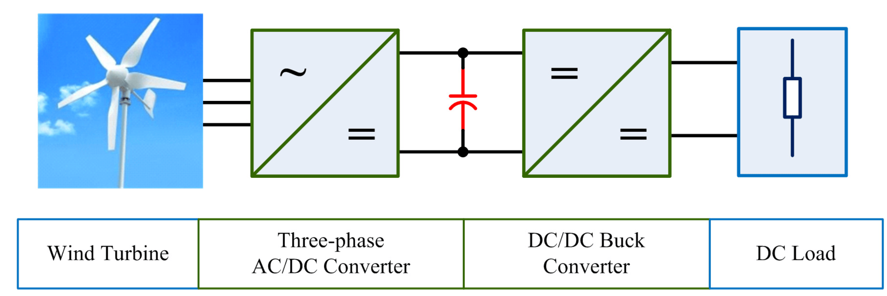

WHY 3 PHASE NOT 1 PHASE?
Electric power distribution is a critical aspect of modern life, and the choice between 3-phase alternating current (AC) and single-phase AC plays a significant role in shaping our electrical infrastructure. While both systems have their merits, the widespread adoption of 3-phase AC in industrial and commercial settings is primarily driven by its numerous advantages over single-phase AC. In this article, we explore the reasons why 3-phase AC has become the preferred choice for a wide range of applications.

Power Generation Efficiency:
One of the primary advantages of 3-phase AC is its superior power generation efficiency compared to single-phase AC. In power plants and generators, 3-phase systems allow for a more balanced distribution of power, resulting in smoother operation and reduced mechanical stresses on equipment. This efficiency is crucial for meeting the growing demand for electricity in various industries.

Higher Power Transfer Capability:
3-phase AC systems have a higher power transfer capability compared to single-phase systems. The use of three conductors instead of one allows for a more effective transmission of power over long distances. This feature is particularly advantageous in large-scale power distribution networks, where minimizing energy losses is essential.

Balanced Loads:
3-phase AC enables a more balanced distribution of loads across the three phases. In single-phase systems, the load is inherently unbalanced, leading to fluctuations and potential disruptions in power supply. The balanced nature of 3-phase systems ensures a more stable and reliable power distribution, reducing the risk of voltage drops and system failures.

Wye (Y) Configuration:
In a wye configuration, the three phases are connected at a common point, resembling a star. Each phase is represented by a line extending from the central point.
Advantages: Wye configurations are commonly used in power distribution systems. The central point allows for a neutral connection, which is useful for balancing loads and providing a reference point for voltage. This balanced distribution is particularly advantageous in systems with varying loads.Delta (Δ) Configuration:
In a delta configuration, the three phases are connected in a loop or triangle. The connection forms a closed circuit without a central point.
Advantages: Delta configurations are often used in high-power industrial applications and electric motors. The absence of a neutral point simplifies the system and can handle higher power loads. The closed-loop design allows for efficient power transmission, making it suitable for robust industrial machinery.In summary, using delta and wye setups in three-phase power is way better than using just one phase. Delta is like a closed loop that efficiently carries power over long distances, reducing energy loss. On the other hand, wye is great for balancing power among machines in places like factories. Together, these setups make three-phase power systems more reliable and adaptable for different needs, especially in industries where a steady and strong power supply is crucial. In short, three-phase power with delta and wye configurations is a smarter choice compared to single-phase power.
Efficient Motor Operation:
Electric motors, a ubiquitous component in industrial machinery, operate more efficiently with 3-phase power. 3-phase motors are known for their smoother torque delivery and reduced vibration compared to their single-phase counterparts. This efficiency is crucial in applications where precise control and high performance are essential, such as in manufacturing and automation.

Reduced Voltage Drop:
3-phase AC systems experience lower voltage drop over long distances compared to single-phase systems. This is particularly advantageous in scenarios where power needs to be transmitted over extensive networks, as reduced voltage drop ensures that the delivered power remains closer to the source voltage, maintaining the overall system stability.

Cost-Effectiveness:
While the initial setup costs for 3-phase power distribution systems may be higher, the long-term cost-effectiveness often outweighs the investment. The improved efficiency, reduced losses, and enhanced performance of equipment using 3-phase power contribute to lower operational costs and increased overall system reliability.
Advanced Applications and Real-world Examples:
Beyond the fundamental advantages, 3-phase AC finds extensive use in advanced applications. For instance, in the realm of residential and commercial settings, the choice between 3-phase and single-phase power plays a crucial role in determining the efficiency and performance of various appliances.
In high-rise condominiums and apartment complexes, where elevators are a common feature, 3-phase AC is often the preferred choice. Elevators require powerful motors to lift and lower the cabins efficiently. The use of 3-phase power ensures a smoother operation, reduced vibration, and increased reliability compared to single-phase systems. The balanced power delivery in 3-phase AC is particularly advantageous in scenarios where precise control and consistent performance are essential, ensuring a safer and more comfortable ride for residents.
On the other hand, many household appliances, such as refrigerators, air conditioners, and lighting fixtures, typically operate on single-phase power. These devices have relatively lower power demands and can function effectively with the simpler single-phase system. Single-phase power is commonly used in residential buildings for its simplicity and cost-effectiveness in catering to the power needs of everyday household items.

Understanding the nuanced needs of different applications allows for the optimal utilization of both 3-phase and single-phase power in a diverse range of settings. This flexibility in power distribution enables a more efficient and tailored approach to meeting the electrical demands of various environments.
Additionally, renewable energy systems, like wind turbines and solar power plants, often employ 3-phase AC generators. The inherent stability and efficiency of 3-phase power make it an ideal choice for converting variable renewable energy sources into grid-compatible electricity.

Conclusion:
In conclusion, the adoption of 3-phase AC over single-phase AC in various industrial and commercial applications is driven by a combination of efficiency, reliability, and performance advantages. From power generation to motor operation and large-scale distribution networks, the balanced and smooth characteristics of 3-phase AC make it the preferred choice for meeting the complex and demanding electrical needs of the modern world.